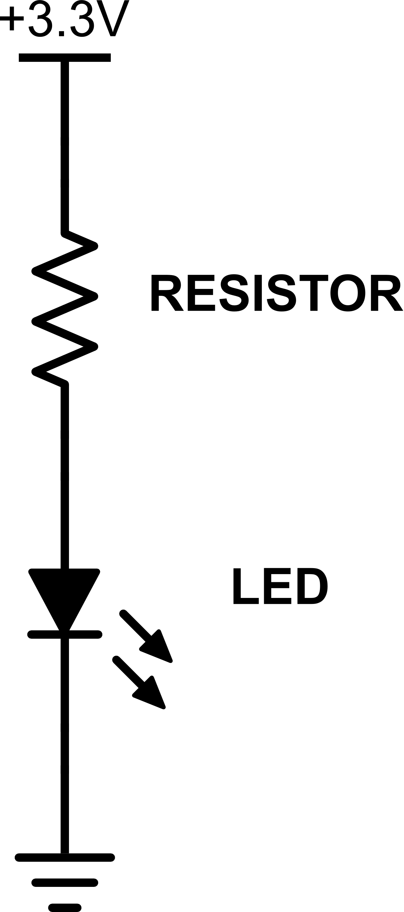
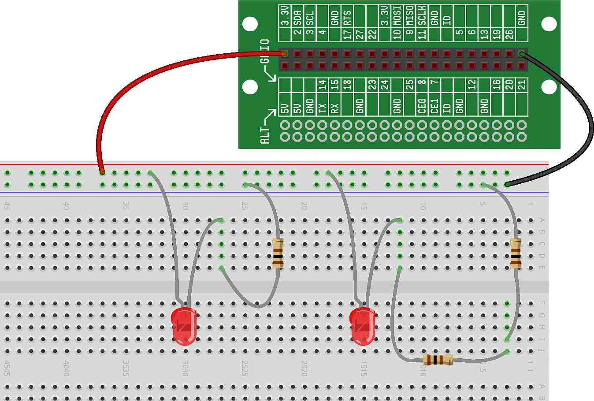
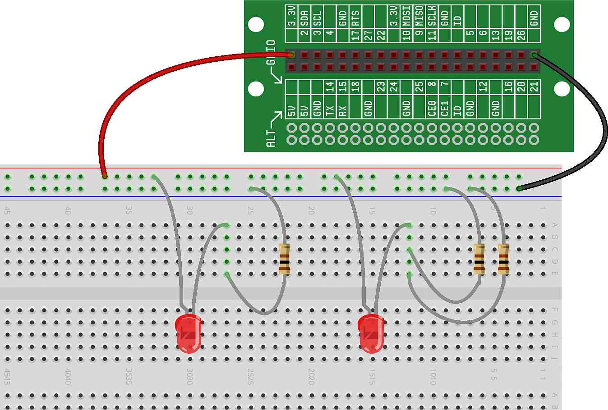

To investigate series and parallel circuits further, lets start again with our LED circuit:
In our previous project, we swapped out the resistor in the circuit to change the current (which changed the brightness of the LED). Now, we can use our knowledge of series and parallel circuits to swap out the resistor for more than one resistor, in different combinations of series and parallel.
To build this circuit, we'll again start with two identical LED circuits. Then, we'll experiment with changing the voltage and resistance.
Start by building two LED circuits that are equivalent to the circuits we've previously built. Each circuit will use a 100 ohm resistor: Both LEDs should be just as bright as they were before.
For one of the circuits (we've chosen the circuit on the right in the diagram below), change the resistor from a single 100 ohms to two 100 ohms resistors in series: 
This will increase the resistance which will decrease the current, which makes the LED dimmer. Note that, compared to the last project, the difference in brightness will be slight (we used a large difference in resistance last project)
For one of the circuits (we've chosen the circuit on the right in the diagram below), rewire the two series resistors as two resistors in parallel: 
This will decrease the resistance which will increase the current, which makes the LED brighter. Again note that the difference in brightness will be slight.
The Your First Circuit Ready Set STEM Cell includes four 100 ohm resistors (in addition to the 1000 ohms and 4700 ohms resistors). The following challenges will modify your LED/resistor circuit:
Compare four 100 ohm resistors in series to one 1000 ohm. Is there any noticeable difference in brightness?
Add 100 ohm resistors in parallel, one at a time, until there are four in parallel. Notice the brightness change as each one is added (each new resistor can be added in parallel while the LED is on, so you will see the brightness change right as each resistor is added).
Put a 100 ohm resistor in parallel with a 1000 ohm resistor. How does the brightness compare to a 100 ohm resistor alone or a 1000 ohm resistor alone? Why?
Put a 100 ohm resistor in series with a 1000 ohm resistor. How does the brightness compare to a 100 ohm resistor alone or a 1000 ohm resistor alone? Why?